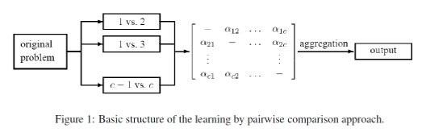

Learning by Pairwise Comparison for Problems with Structured Output Spaces
Topic: Thorough theoretical and
empirical study of the pairwise approach for learning
problems with Structured Output Spaces.
Code Name: LPCforSOS
Duration: 2 years (05/2007--04/2009)
Extension: 3 years (05/2009--04/2012)
Funding: DFG
Partner: Knowledge
Engineering & Bioinformatics Lab,
Philipps-Universität Marburg (Prof. Eyke
Hüllermeier)
Goals of this project
Learning by pairwise comparison (LPC) is a well-established technique in the field of machine learning, where it allows for reducing the problem of polychotomous to the one of dichotomous classification. Recently, some successful attempts to apply this technique also in more complex learning scenarios have been made. In particular, there is a current trend in machine learning to study supervised learning problems involving structured output spaces, such as multi-label, ordered, and hierarchical classification as well as label ranking. Motivated by first promising though solitary results, this project aims at exploring the potential and broadening the scope of LPC in a more systematic way. The ultimate goal of the project is a general and coherent framework in which problems with structured output spaces can be solved by LPC in a principled manner. Apart from corresponding methodological contributions, an important aspect of the project concerns the investigation of theoretical properties of LPC, especially a characterization of the class of problems it can solve and the computational complexity these solutions bring about. Finally, a thorough empirical evaluation and comparison with alternative algorithms shall be conducted for a variety of concrete and practically relevant learning problems.

Main Question: Given a learning
problem with structured output space, how to decompose it
into pairwise learning problems, and how to aggregate the
base learners' predictions so as to minimize a given loss
function?
Apart from these core problems, we plan to investigate the following fundamental aspects of LPC techniques for different learning tasks:
- Complexity: What is the time and space complexity of the LPC approach, depending on the size of the training set and the size of the label set
- Approximation: Is it possible to reduce complexity by training or querying only a subset of the pairwise models? What is the tradeoff between complexity and predictive accuracy?
- Incomplete data: How do deal with incomplete training (output) information? This point is of particular relevance in the case of structured outputs such as rankings. In fact, more often than not, such outputs will only be partly specified in practical applications.
- Predictive performance: How does LPC perform in practice, and how does it compete with alternative methods? How is its performance influenced by the type of classifier used as a base learner, and what type of output should be produced as "votes" of the learners (e.g., binary votes, probabilities, . . .)?
In brief, the goal of this project is to provide general
answers to the above questions that apply to all types of
structured output spaces. Nevertheless, within the
project we shall pay special attention to the concrete
learning problems listed in Table 1.
Publications
- Klaus Brinker, Johannes Fürnkranz, and Eyke Hüllermeier. A unified model for multilabel classification and ranking. In Proceedings of the 17th European Conference on Artificial Intelligence (ECAI-06), 2006
- Johannes Fürnkranz. Round Robin rule learning. In C.E. Brodley and A. P. Danyluk, editors, Proceedings of the 18th International Conference on Machine Learning (ICML-01), pages 146-153, Williamstown, MA, 2001. Morgan Kaufmann Publishers
- Johannes Fürnkranz. Pairwise classification as an ensemble technique. In T. Elomaa, H. Mannila, and H. Toivonen, editors, Proceedings of the 13th European Conference on Machine Learning (ECML-02), volume 2430 of Lecure Notes in Artificial Intelligence, pages 97-110, Helsinki, Finland, 2002. Springer-Verlag.
- Johannes Fürnkranz. Round robin classification. Journal of Machine Learning Research, 2:721-747, 2002.
- Johannes Fürnkranz. Round robin ensembles. Intelligent Data Analysis, 7(5):385-404, 2003.
- Johannes Fürnkranz and Eyke Hüllermeier. Pairwise preference learning and ranking. In N. Lavrac, D. Gamberger, H. Blockeel, and L. Todorovski, editors, Proceedings of the 14th European Conference on Machine Learning (ECML-03), volume 2837 of Lecture Notes in Artificial Intelligence, pages 145-156, Cavtat, Croatia, 2003. Springer-Verlag.
- Johannes Fürnkranz and Eyke Hüllermeier. Preference learning. Künstliche Intelligenz, 19(1):60-61, 2005.
- Eyke Hüllermeier and Johannes Fürnkranz. Ranking by pairwise comparison: A note on risk minimization. In Proceedings of the IEEE International Conference on Fuzzy Systems (FUZZ-IEEE-04), Budapest, Hungary, 2004.
- Eyke Hüllermeier and Johannes Fürnkranz. Learning label preferences: Ranking error versus position error. In Advances in Intelligent Data Analysis: Proceedings of the 6th International Symposium (IDA-05), pages 180-191. Springer-Verlag, 2005.
- Eyke Hüllermeier and Johannes Fürnkranz. Comparison of ranking procedures in pairwise preference learning. In Proceedings of the 10th International Conference on Information Processing and Management of Uncertainty in Knowledge-Based Systems (IPMU-04), Perugia, Italy, 2004.
- Eyke Hüllermeier and Johannes Fürnkranz, and Jürgen Beringer. On position error and label ranking through iterated choice. In LWA 2005, Lernen Wissensentdeckung Adaptivität, pages 158-163, Saarland University, Saarbrücken, Germany, 2005. German Research Center for Artificial Intelligence (DFKI).
- Petr Savicky and Johannes Fürnkranz. Combining pairwise classifiers with stacking. In Advances in Neural Information Processing Systems 12 (NIPS-99), pages 547-553. MIT Press, 2000.

 +49 6151 16-21811
+49 6151 16-21811 +49 6151 16-
+49 6151 16-

 Drucken
Drucken Impressum
Impressum Sitemap
Sitemap Suche
Suche